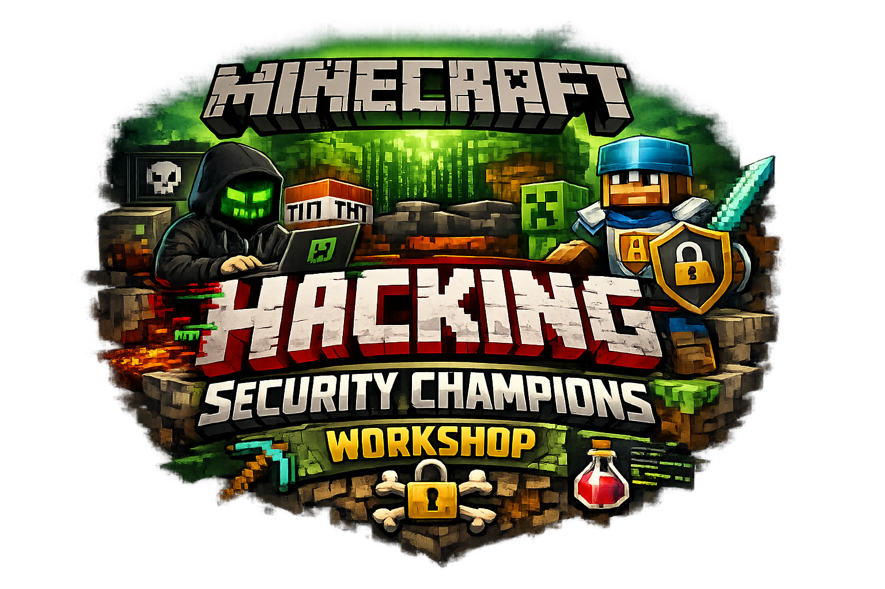

| 10:00 | Intro, oppsett og demo |
| 11:00 | Lunsj i kantina |
| 11:30 | CTF starter — hack away! |
| 15:00 | Mat og drikke |
| 16:00 | Hacking & øl i sosialarealet |
Litt som Burp Suite for HTTP — i stedet for å intercepte nettverkspakker, injiserer vi kode i klienten og endrer oppførselen fra innsiden.
onInitializeClient() ← kjøres én gang ved oppstart
└── event.register() ← "når X skjer, kjør dette"
└── din kode ← kjøres når X faktisk skjergit clone --branch 1.21.11 \
https://github.com/FabricMC/fabric-example-modGradle → Tasks → fabric → genSourcesEtter genSources kan du Ctrl+Klikke deg inn i hvilken som helst Minecraft-klasse.
Vis en melding i chatten når spilleren joiner en verden.
ClientPlayConnectionEvents.JOIN.register((handler, sender, client) -> {
client.player.displayClientMessage(
Component.literal("Velkommen til MC Hacking! 🎉"),
false
);
});
Funnet ved å søke i Fabric API etter join-events →
ClientPlayConnectionEvents →
lese Javadoc på JOIN
Trykk en knapp → send en chatmelding.
Registrer knappen én gang:
var key = KeyBindingHelper
.registerKeyBinding(
new KeyMapping(
"key.examplemod.action",
KEYSYM,
GLFW.GLFW_KEY_R,
category
));Poll hvert tick:
ClientTickEvents
.END_CLIENT_TICK
.register(client -> {
while (key.consumeClick()) {
// din kode her
}
});WORKSHOP.mdLykke til 🎉
appsec-ctf namespacet i console.nais.iokubectl port-forward -n appsec-ctf \
$(kubectl get pod -n appsec-ctf -l app=minecraft-ctf \
-o jsonpath='{.items[0].metadata.name}') 25565:25565